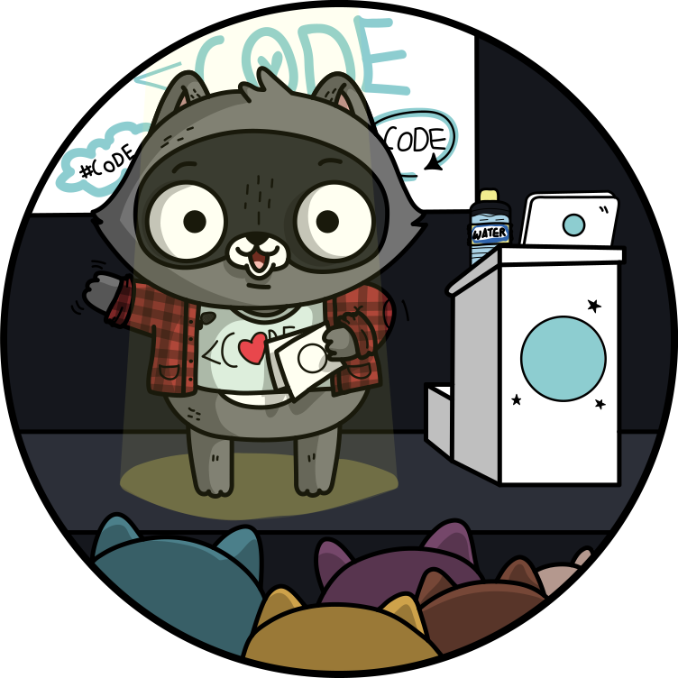
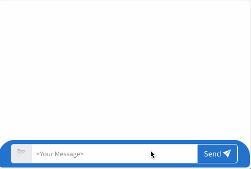
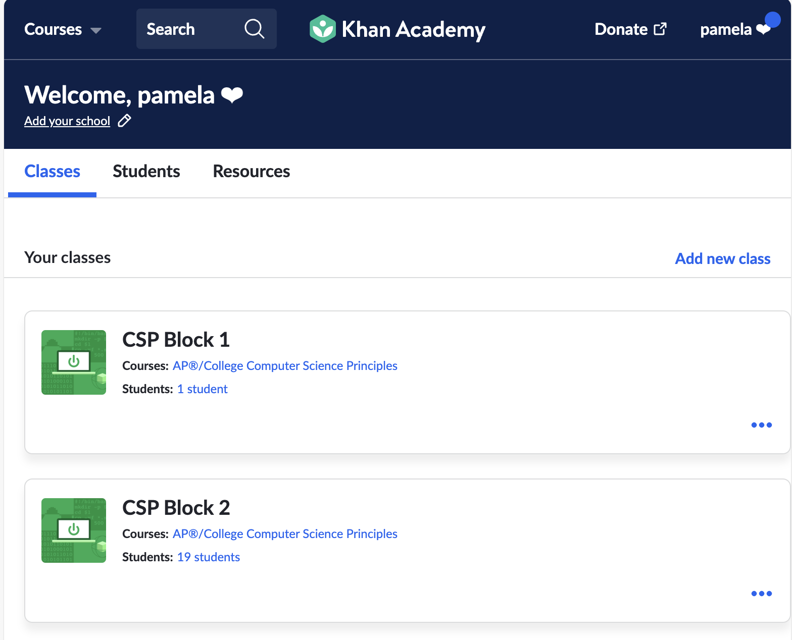
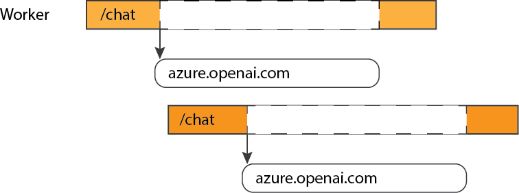

Python
Web Apps
aka.ms/python-web-apps-101
Meet Pamela

Python Cloud Advocate at Microsoft
Formerly: UC Berkeley, Coursera, Khan Academy, Google
Find Pamela online at:
| Mastodon | @pamelafox@fosstodon.org |
| @pamelafox | |
| GitHub | www.github.com/pamelafox |
| Website | pamelafox.org |
Meet Renee

Python Cloud Advocate at Microsoft
Executive Director of Girls Programming Network, CEO/Founder of ConnectEd Code
Find Renee online at:
| @noble_renee | |
| GitHub | github.com/reneenoble |
| linkedin.com/in/renee-noble-48a37159/ |
Today's topics
- How the web works
- Web framework: Flask
- 👩🏾💻 Exercise #1: Flask app
- 👩🏼💻 Exercise #2: Template inheritance
- Web framework: Quart
- Hosting web apps
- 👩🏻💻 Exercise #3: Deploy an app
How the web works

Clients and servers

What is a request?
Clients send requests to a route on the server...To GET:
- HTML, CSS, and JavaScript that make up a web page
- Files to download
- Raw data or text
To POST:
- Their submission to a form
- Files to upload
- Raw data or text
HTTP Requests
A client sends an HTTP request:
GET /index.html HTTP/1.1
Host: www.example.com
The server sends back an HTTP response:
HTTP/1.1 200 OK
Content-Type: text/html; charset=UTF-8
Content-Length: 208
<!DOCTYPE html>
<html>
<head>
<title>Example Domain</title>
</head>
<body>
<h1>Example Domain</h1>
<p>This domain is to be used for illustrative examples in documents.</p>
</body>
</html>
Responses - HTTP Status Codes
The most commonly used codes:
| Code | Meaning |
|---|---|
| 200 | OK |
| 301 | Moved Permanently |
| 404 | Not Found |
| 500 | Server Error |
See more codes at HTTPcats.com or Wikipedia: List of HTTP status codes.
What's in Webpages?
Webpages bring together three kinds of files/languages:
- HTML: The content structure of the page
- CSS: Defines style rules that relate to the HTML
- JavaScript: Code that makes the content interactive
HTML Examples
HTML contains the content and structure of your webpage in tags like these:
Headings
<h1>Web Development - Chapter 1</h1>
<p>Today I am learning about webp development.</p>
<ul>
<li>Topic 1 - What is the Web</li>
<li>Topic 2 - Web Dev Frameworks</li>
<li>Topic 3 - Deploying to Azure</li>
</ul>
More HTML
HTML captures content, puts it in semantic chunks, and creates hierarchy.
There are a lot of tags to use to:
- Add content like headings, paragraphs, images, links, lists, and tables
- Group parts together with divs, sections, and articles
- Add metadata, eg: links to fonts and styles
CSS Example
CSS uses rules to set target elements to style.
Targets can be set with:- The type of element. i.e. All H2 elements
- The structure of elements. i.e. All links inside a heading
- Setting specific groups or items with classes and IDs
We could style headings and paragraphs like this:
h1 {
font-family: "Roboto", sans-serif;
color: rgb(240, 50, 132);
}
p {
background-color: yellow;
}
More CSS
CSS can do a lot of things!
- Style colours, fonts, sizes
- Set margins, padding, and sizing
- Control layout, eg: how an element follows on from the last
- Basic dynaics, eg: hover
JavaScript
JavaScript is code that dynamically accesses and updates the page content to make it more interactive.
It can do these things and many more:
- Run scripts on button clicks or typing
- Make requests and process responses
- Manage cookies
What does a server do?
The most basic server just serves up HTML and multimedia files from a file system.
Servers are also used for features that require persistent data or more security than allowed in the client:
- User authentication
- Database fetches/updates
- Caching
Choosing a tech stack

For the frontend:
- HTML, CSS
- JavaScript or TypeScript
- Frameworks: React, Vue, Svelte, Lit, Web Components, HTMX
For the backend:
- Python
- Node.js
- Java
- C#
- Go
- PHP
- Ruby
- Rust
Server-side Python

Simple HTTP server
The http module in the Python standard library can run a basic server.
⚠️ It is not recommended for production.
It's handy for learning and local development, however...
Example: Simple file server
A file server serves up files and folders according to their path in the file system. Also known as a static server.
Run a file server from any folder:
python3 -m http.server 8080
Example: Simple dynamic server
👩🏼💻 Repo: github.com/pamelafox/python-simple-server-example/
The server code is in server.py.
Uses the http module to dynamically generate responses.
Run the server:
python3 server.py
What is a web framework?
Don't reinvent the wheel!
People make websites all the time, so we have tools that make it simpler.
Web frameworks have features like:- Managing routing URLs to functions
- Enabling you to run a server
- Supporting rendering templates for your webpages
Different frameworks offer different features and levels of complexity.
Python web frameworks
Python has a few modern web frameworks that are popular:
Flask framework
Flask, an external package, is a lightweight framework for server requests and responses.
Apps written in Flask:
- Khan Academy (originally)
- Netflix
Example: Simple Flask website
👩🏼💻 Repo: github.com/Azure-Samples/simple-flask-server-appservice
Most server code is in app.py. Uses Flask to generate responses for each route.
Run the server:
python3 -m flask run --port 50505 --debug
Routes
Handle GET requests to "/about" route:
@app.get("/about")
def index():
return 'About Us'
Handle query parameters:
@app.get("/search")
def hello():
query = request.args.get("query")
return f"Searching for: {query}!"
Handle path parameters:
@app.get("/book/<id>")
def hello(name):
return f"Book with ID {id}!"
Routes
Handle POST requests:
@app.post("/submit")
def submit():
return "Thanks for submitting!"
Handle form data:
@app.post("/submit")
def submit():
name = request.form.get("name")
return f"Thanks for submitting, {name}!"
Handle JSON data:
@app.post("/submit")
def submit():
data = request.get_json()
name = data.get("name")
return f"Thanks for submitting, {name}!"
Template basics
Flask uses Jinja2 templates to render HTML.
Variables:
<h1>{{ title }}</h1>
Conditionals:
{% if user %}
<p>{{ user.name }}</p>
{% else %}
<p>Logged out</p>
{% endif %}
Loops:
<ul>
{% for item in items %}
<li>{{ item }}</li>
{% endfor %}
</ul>
Exercise prerequisites
Online development: Github account
Local development (option 2):
- Code editor
- Python 3
Local development:
Exercise: Flask App
Using this repo:
github.com/Azure-Samples/simple-flask-server-appservice
aka.ms/flask-appservice
- Get the app running!
- Add a new route for "/about" that uses a new "about.html" template.
- Check the new route works.
- Add a "location" query parameter for the new route and display the value on the page.
Template inheritance
Jinja2 supports template inheritance.
Base template:
<html>
<head>
<title>{{ title }}</title>
</head>
<body>
{% block content %}{% endblock %}
</body>
</html>
Child template:
{% extends "base.html" %}
{% block content %}
<h1>About Us</h1>
{% endblock %}
Exercise: Template Inheritance
- Create a base template based on what's common across the other pages.
- Refactor the other templates to extend the base template.
- Change the 404 handler to render a template that extends the base template.
Flask in VS Code
Debugging Flask
Use a launch configuration to run the Flask app in debug mode.
Quart & Async
Quart
Quart is the asynchronous version of Flask.
@app.get("/")
async def index():
return await render_template("index.html")
Quart is useful when apps have slow I/O or network calls:
@app.route('/')
async def chat():
return await openai_client.chat.completions.create(
messages=[{"role": "user", "content": "Write a haiku"}]
)
The importance of async
We need async to build modern web apps that support concurrency.
A web app without async:
A web app with async can handle new requests while waiting for an I/O op:
Any app with slow network requests, DB queries, or file reads can benefit.
See also: FastAPI tutorial on async
Porting Flask to Quart
Install Quart:
pip install quart
Change the app construction:
from quart import Quart
app = Quart(__name__)
Change routes to async:
@app.route('/')
async def index():
Change API/DB calls to async.
Quart examples
| Repo | Description |
|---|---|
| azure-search-openai-demo | RAG chat app using OpenAI |
| openai-chat-app-quickstart | Simple chat app using OpenAI |
| openai-chat-app-entra-auth-local | Simple chat app using OpenAI and user auth with Quart-Session |
Hosting web apps

Hosting options
When your website is hosted on a server, it means other users on the Internet can access it.
Many possible hosts:
- A rented computer in a data center
- A virtual machine
- A PaaS (platform as a service)
Consider:
- How much control do you want?
- How much do you enjoy administering systems?
- Do you need it to scale up/out?
Azure hosting options
| Azure Container Apps | Azure Functions | |||
| Azure Kubernetes Service | Container Management | Azure App Service | Serverless | |
| Environment | Containers | PaaS | ||
| Cloud | Azure | |||
For Flask, App Service is easiest way to get started.
But wait, there's more!
| Databases | PostGreSQL, MySQL, CosmosDB, ... |
|---|---|
| Storage | Blob Storage, Files, Archive Storage, ... |
| Networking | DNS Zone, Virtual Network, VPN Gateway, ... |
| Caching | CDN, Front Door, ... |
| Security | Key Vault, Security Center, ... |
| Machine Learning | Translator, Bot Service, Computer Vision, ... |
| ...and more! | |
Hosting the Flask app on Azure

Using the Azure Dev CLI:
azd up
Exercise: Deploying an app
- Sign up for a free Azure account
- Either open one of the previous projects in Codespaces or follow these installation steps for the Azure Developer CLI.
- Run
azd up. If prompted, login to your Azure account. - If it deploys successfully, share the endpoint URL with your classmates. If not, let us know what error you get. 🪲
- Once you've verified the app is working, run
azd downto un-deploy the app (so that you don't waste cloud resources unnecessarily).